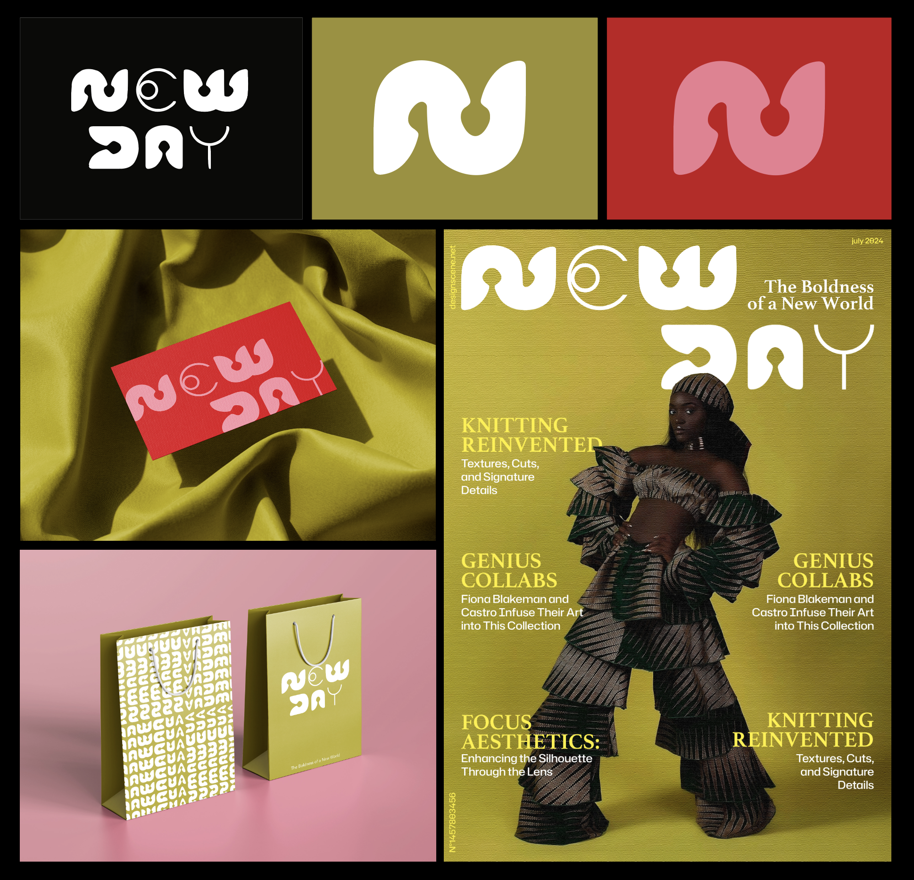

I thought about the brand’s story: NEW DAY is aimed at a committed woman who loves upcycled clothing and appreciates patterns inspired by diverse cultures. I imagined how the identity would unfold in the brand’s communication, such as in an advertisement, standalone graphic patterns, or its own magazine.
